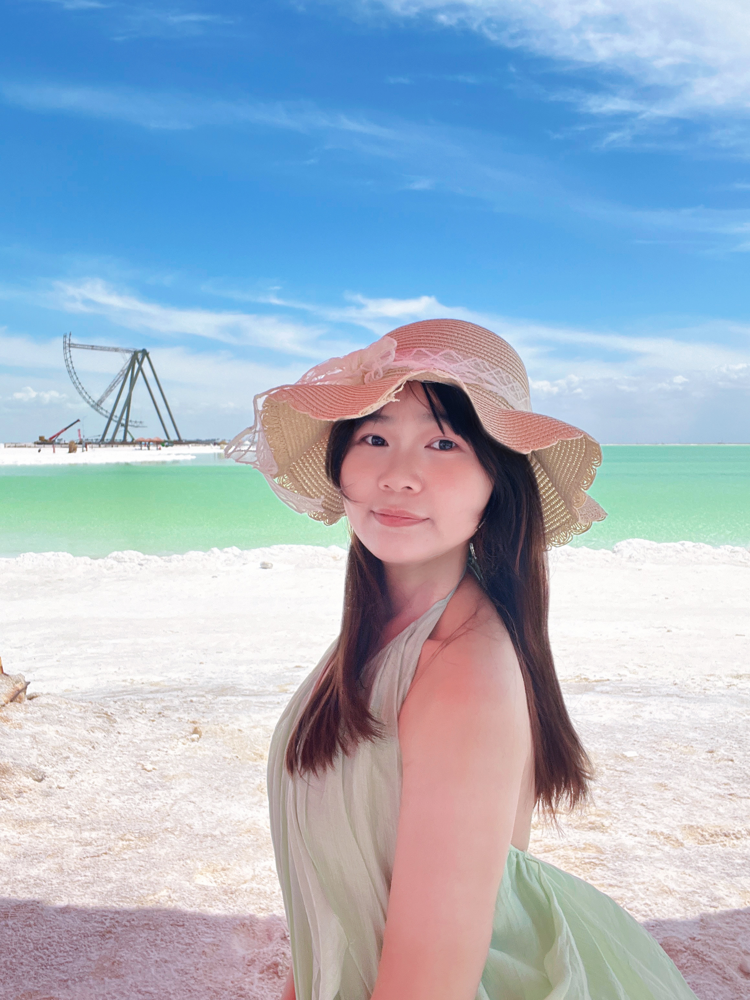
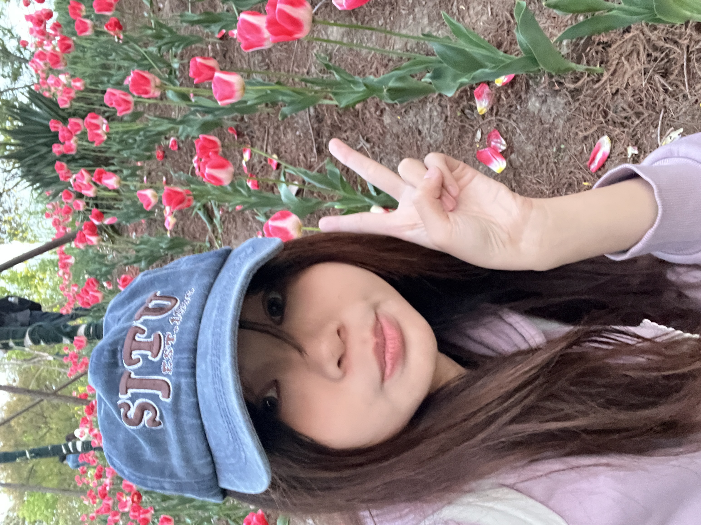
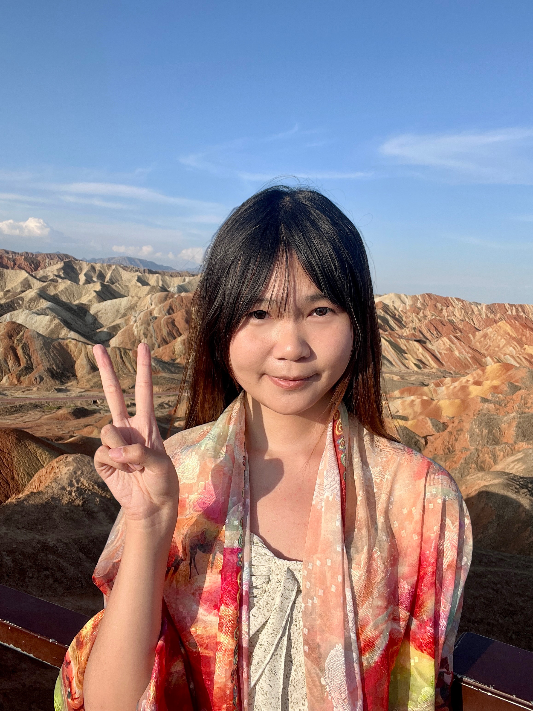

你好！我是Daisy Tang，2004年生于湖南，2021年来到上海财经大学，从数学本科一路读到应用统计硕士，预计2027年毕业。性格上，我大概是50% ESTJ + 50% ISTJ——熟人面前E人浓度80%，工作场合则沉稳靠谱。
我对数据科学充满热情，相信数据中蕴藏着驱动商业决策的力量。在字节跳动的实习经历让我深入理解了如何在海量数据中发现规律、验证假设、推动策略落地——从LT定价容器到短剧协同优化，每一个项目都让我更加确信这是我想深耕的方向。
学术上，我的本科毕业设计聚焦于因果推断中的 Uplift Model，探索如何用数据科学方法实现精准营销。目前研究生阶段，我正在开展一项更具前沿性的研究——生成式AI驱动的文本混杂控制，基于 GenAI-Powered Inference (GPI) 框架，利用大语言模型的内部表征来校正电商评论中的文本混杂偏差，从而更准确地估计促销策略的因果效应。
我相信好的数据分析不只是「描述现状」，更是「预测未来」和「指导决策」。
本硕六年，积累了一些跨领域的实战经验——8段实习，横跨体制、金融、外企、互联网，岗位从运营到数据产品再到数分数科，做过的业务覆盖电商、内容、广告和用户增长。如果你对职业方向、实习选择有困惑，欢迎一起聊聊。
工作之外，我是一个闲不下来的人——喜欢大自然和绿色，尤其爱雪山，日常爬山徒步；口味上无辣不欢，钟爱云贵川湘和东南亚菜；最大的爱好是一个人旅行，目前中国探索进度 24/34，绝大部分是 solo trip。最近还用 AI 做了个「毕业旅行去哪玩」的网页 😄。
✨ 兴趣爱好
点击卡片了解更多